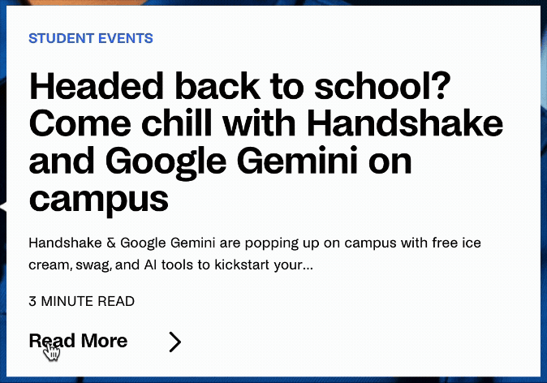

TRIGGERS:
RULES:
- Hover On
- The arrow that is next to the Read More text slide to the right slightly
- The cursor becomes a pointer
- Hover Off
- The arrow returns to its original spot closer to the Read More text
- The pointer becomes a standard cursor
FEEDBACK:
- Hover On
- The arrow that is next to the Read More text slide to the right slightly
- The cursor becomes a pointer
- Hover Off
- The arrow returns to its original spot closer to the Read More text
- The pointer becomes a standard cursor
LOOPS:
N/A
MODES:
- Click
- The Read More text after the click will bring the user to a new page to read the blog post
